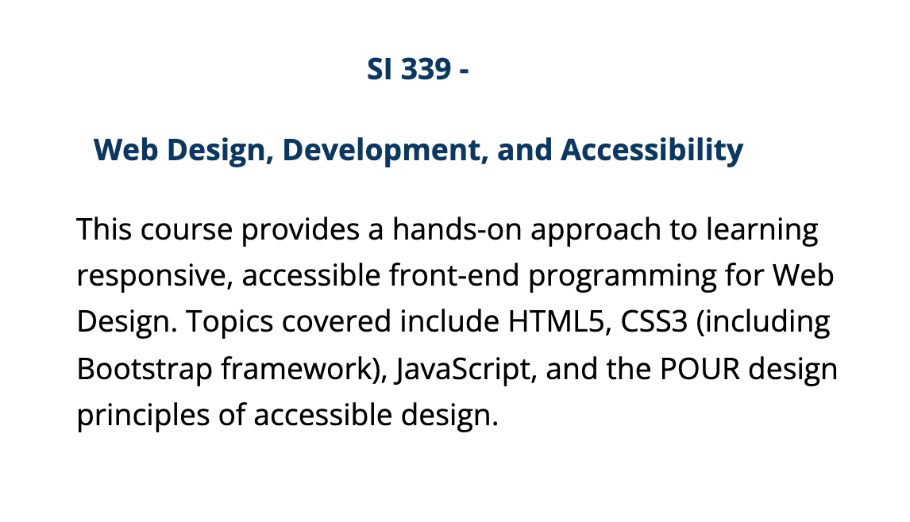
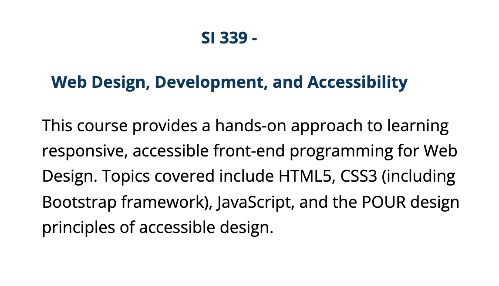

Relevant Coursework
Listed below are a range of courses I've taken at the University of Michigan (and one at the University of Maryland) where I have learned more about programming, how information plays out in wider society and what its real-world application looks like.
I'm currently taking an information management course along with a web design course through the School of Information. I'm also taking an organizational theory course and a course on the psychology of people within organizations through my Organizational Studies degree in LSA.
I plan on taking more courses through both colleges to further advance my knowledge on how information and organizations interact.

 
